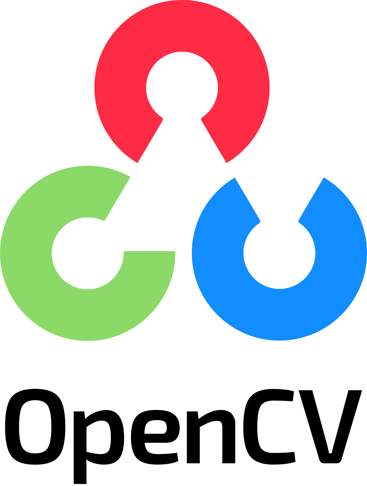
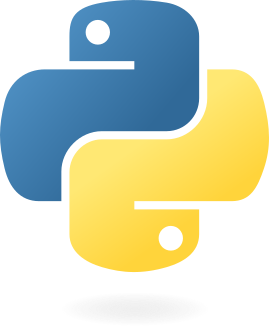
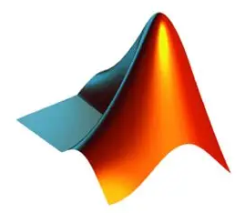
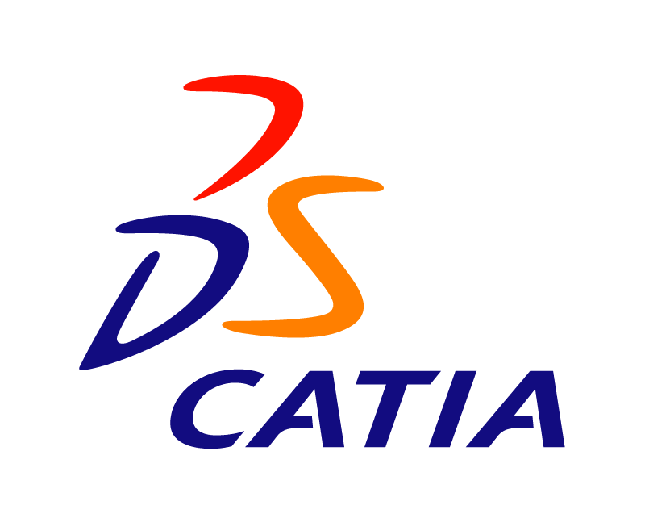

Page // Skills
Technical Skills & Tools.
Technical skills across aerospace engineering, UAVs, AI/ML, and research, developed through academic projects and hands-on experience.
UAV & Aerospace
-
Mission Planner
-
QGround Control
-
QGIS
-
DroneDeploy
-
XFLR5
- Drone Flight Controller Configuration
- Drone, RC Plane Piloting
- RC Plane Design and Fabrication
- Quadcopter Assembly
Machine Learning & AI
-
OpenCV

-
Scikit-learn

-
OCR (Tesseract)
- Random Forest
- Computer Vision
- NLP
- SciBERT / SBERT
- Transformer-Based Models
Programming
-
Python

-
Matlab

-
C
Designing Software
-
CATIA

-
Plane Maker
Research Skills
skills
-
LaTeX

- Data Collection
- Data Analysis
- Literature Review
- Technical Report Writing (LaTeX)